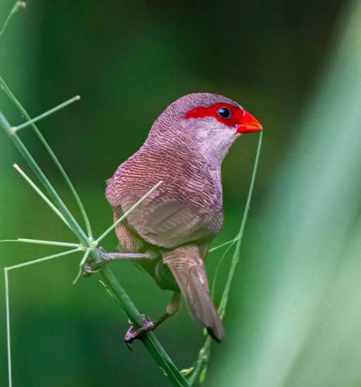
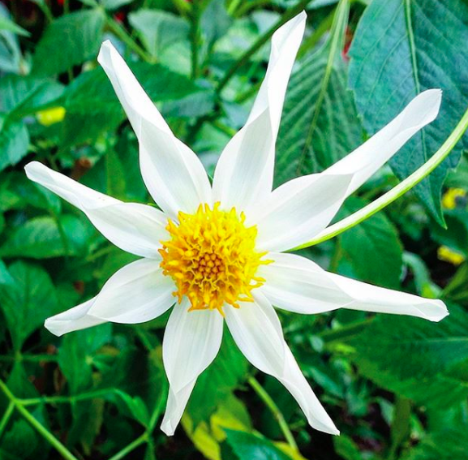

The Place
Metal cranes are a dime a dozen in Singapore, but it is always good to seek out some of their feathery counterparts out in the wild – and get a few deep breaths of fresh air while you’re at it. MacRitchie Reservoir and Sungei Buloh Wetland Reserve are (literally) evergreen favourites, and we can add one more to the green club – Kranji Marshes, which, at a sprawling 57 hectares, is our island’s largest freshwater farmland. It was cultivated since the ’70s when the Kranji reservoir was dammed, forming a wild diversity of terrains such as marshland, grassland and secondary forests.
Kranji Marshes is home to a rich array of flora and fauna, including more than 170 species of birds, 54 species of buterflies and 33 species of dragonflies. It provides an important habitat in the Kranji area for the conservation of biodiversity, especially marsh birds. With a range of natural habitats such as freshwater marsh, woodland and grass habitats, Kranji Marshes is a great place for visitors to observe and enjoy nature.
What does it offer?
In this unique wetland flooded in shallow water and dominated by grasses and sedges, many organisms associated to freshwater and open country habitats thrive here, including reptiles, amphibians and plants that are well-adapted to water-logged conditions.
In particular, the Kranji Marshes has become a favourite spot among birdwatchers. Common avian species seen here include the Purple Heron (Ardea purpurea), the Cinnamon Bittern (Ixobrychus cinnamomeus), the Rusty-breasted Cuckoo (Cacomantis sepulcralis), the Grey Heron (Ardea cinerea), and the Baya Weaver (Ploceus philippinus). The Purple Swamphen (Porphyrio porphyrio), the Red-wattled Lapwing (Vanellus indicus), and the Cotton Pygmy Goose (Nettapus coromandelianus) are among a few of the interesting wildlife one can find in this rural piece of land.
As for plant life, the Water Lily (Nymphaea sp.) and the Water Banana (Ludwigia adscendens) are commonly seen in deeper pools whereas the Yellow Burhead (Limnocharis flava) can be found in shallower pools. On drier but soggy soils, ferns like the Akar Paku (Stenochlaena palustris) thrive. Indian Cherry (Muntingia calaburia), on the other hand, can be found on drier, poorer soils.The presence of Nipah palms (Nypa fruticans) hints of the marshes past as a mangrove habitat.
 